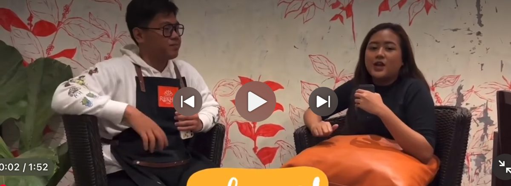
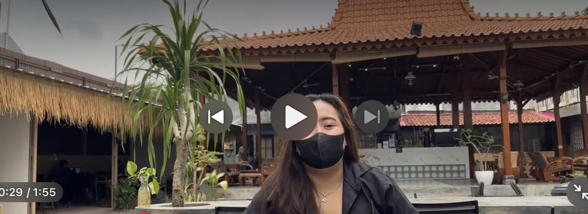
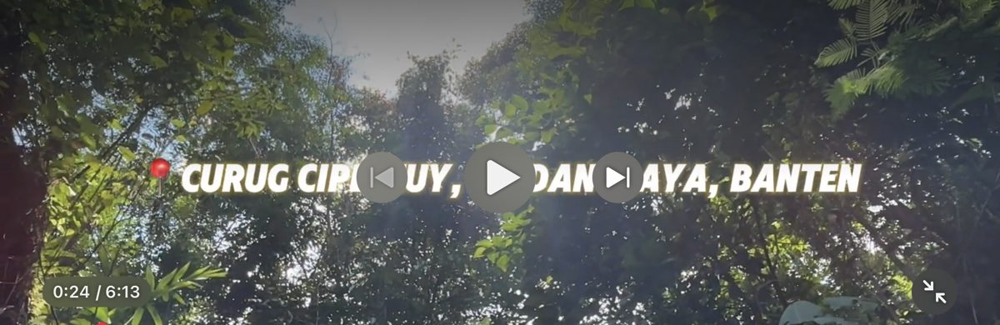

Universitas Ibnu Chaldun
S1 Ilmu Komunikasi — lulus 2025
Fokus pembelajaran: komunikasi, perilaku konsumen, dan produksi konten.
Administrative Support • Customer Service • Operational Support
Kumpulan pendidikan, pengalaman kerja, keahlian, dan proyek saya.

Saya lulusan S1 Ilmu Komunikasi yang berpengalaman di bidang Quality Control, pelayanan pelanggan, dan administrasi perkantoran melalui pengalaman kerja dan magang.
Saya terbiasa memeriksa barang, membantu proses retur, berkomunikasi dengan pelanggan, dan mendukung pekerjaan operasional. Saya disiplin, mudah beradaptasi, dan ingin terus berkembang di bidang administrasi, operasional, dan layanan pelanggan.
S1 Ilmu Komunikasi — lulus 2025
Fokus pembelajaran: komunikasi, perilaku konsumen, dan produksi konten.
SMK
Pendidikan kejuruan dengan praktik kerja lapangan di Bank BTN.
PT. Moell Indonesia Sukses
Mega Print
PT. Mata Air Boga Lestari
Bank BTN
Proyek Mata Kuliah Perilaku Konsumen
Proyek usaha kelompok bersama satu rekan, dengan produk chicken ball berisi keju lumer. Saya belajar memahami produk, konsumen, dan pelaksanaan proyek usaha.
Teamwork • Consumer Awareness • Communication

Proyek video akademik
Proyek produksi video yang saya kerjakan bersama tim, dengan keterlibatan di beberapa peran selama prosesnya. Contoh hasilnya adalah episode #SobatNongki di kanal @sobatjurnalis7599.
Communication • Collaboration • Media Production


Video pemasaran pariwisata — Kuliah Kerja Nyata
Berpartisipasi dalam pembuatan video pemasaran pariwisata “KKN FIKOM Video Pemasaran 2024” yang mengangkat wisata alam di Banten, bersama tim KKN.
Teamwork • Communication • Creative Collaboration



Terima kasih sudah meluangkan waktu melihat portfolio saya.
Saya terbuka untuk kesempatan kerja yang memungkinkan saya berkontribusi, belajar, dan berkembang secara profesional.
Ready to learn. Ready to contribute.